Releasenotes eBlinqx Hypotheekadvies – December 2024
Onderstaande updates hebben wij in de maand december doorgevoerd:
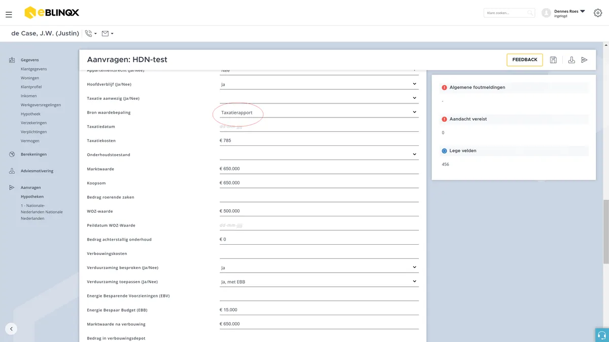
IT-22842: Bron waardebepaling' in het HDN-aanvraagformulier
We hebben een verbetering doorgevoerd in het HDN-aanvraagformulier! Vanaf nu wordt het veld 'Bron waardebepaling' automatisch ingevuld met de waarde 'Taxatierapport'. Indien een andere bron van waardebepaling gewenst is, kun je dit uiteraard nog steeds handmatig aanpassen.
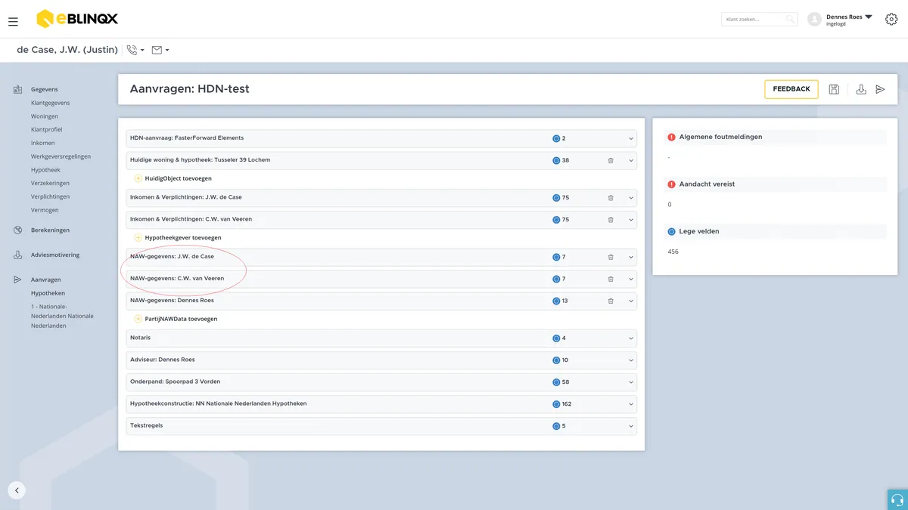
IT-22841: Kinderen uit het HDN-aanvraagformulier
Om het gebruiksgemak van het HDN-aanvraagformulier te verbeteren, hebben we besloten om kinderen niet langer automatisch te prefillen. Hoewel het vooraf invullen van kinderen handig leek, met name in situaties waarin meer dan twee personen gezamenlijk een woning kopen, bleek dit in de praktijk juist meer vragen op te roepen dan antwoorden te bieden.
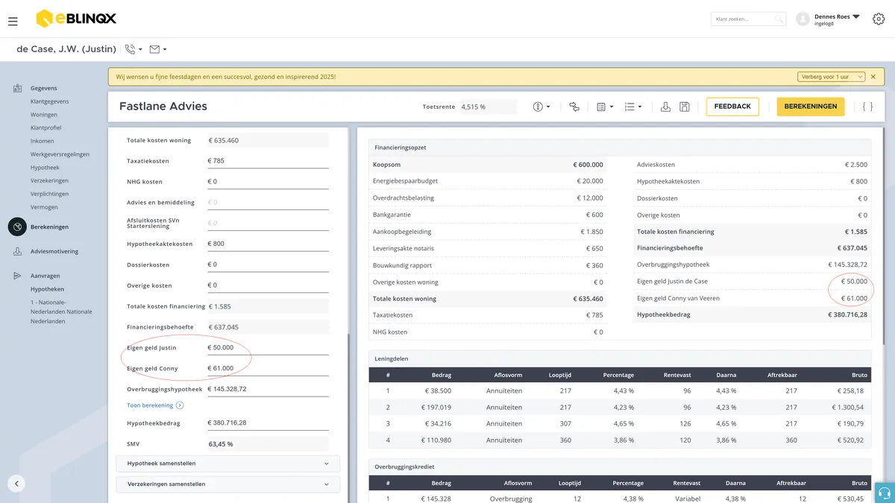
IT-23068: Update meldtekst functionaliteit in eBlinqx Hypotheekadvies
We hebben de meldtekst-functionaliteit in eBlinqx Hypotheekadvies verder verbeterd! Eerder deze maand hebben we al de positie en de lengte van de balk aangepast voor een betere gebruikerservaring. Vanaf nu introduceren we een nieuwe feature: De meldtekst kan nu (tijdelijk) door de gebruiker worden weggeklikt! Dit betekent dat je meer controle hebt over wat je ziet op je scherm. De meldtekst blijft wel beschikbaar indien nodig, maar je kunt deze eenvoudig tijdelijk verbergen.

IT-23190: Het eigen geldbedrag van de mede-aanvrager in hypotheekdossiers
We hebben een probleem opgelost waarbij het eigen geldbedrag van de mede-aanvrager visueel verdween nadat een hypotheekbedrag werd aangepast, de berekening werd opgeslagen en het dossier later opnieuw werd geopend. Met deze update blijft het eigen geldbedrag van de mede-aanvrager correct zichtbaar en consistent, ongeacht wijzigingen in het hypotheekbedrag of na het opslaan en heropenen van het dossier.
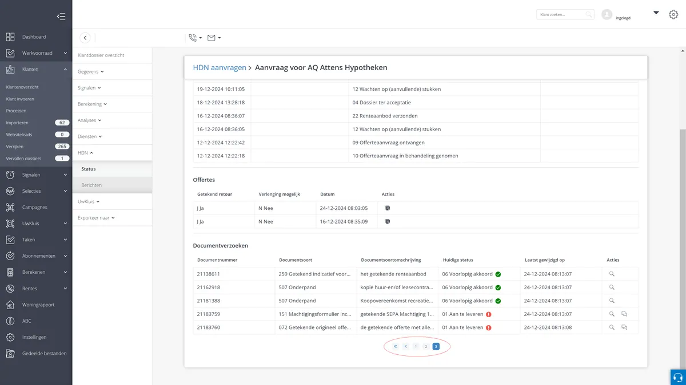
IT-23222: Navigeren door tabbladen bij documentverzoeken in HDN-aanvragen
We hebben een veelgevraagde functionaliteit hersteld: vanaf nu is het weer mogelijk om gemakkelijk door de opvolgende tabbladen heen te klikken bij documentverzoeken binnen een HDN-aanvraag.
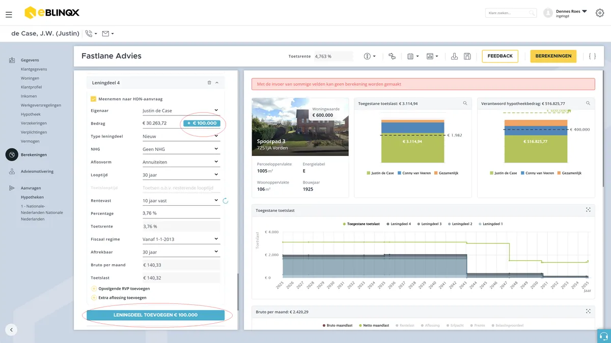
IT-23194: Loanparts financing differences
Het is vanaf nu mogelijk om met slechts één klik een nieuw leningdeel toe te voegen of het bedrag van een recent toegevoegd leningdeel te wijzigen.
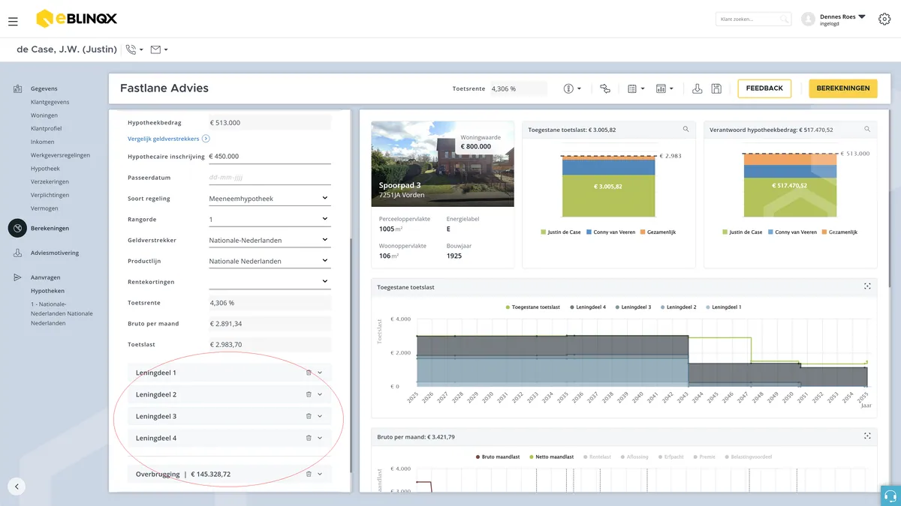
IT-23153 Leningdelen in- en uitklappen
We hebben een handige nieuwe functie toegevoegd: het is nu mogelijk om leningdelen open en dicht te klappen. Met deze verbetering kun je leningdelen eenvoudig uitklappen om meer details te bekijken of juist inklappen om overzicht te behouden. Dit zorgt voor een efficiëntere en meer georganiseerde weergave van informatie.
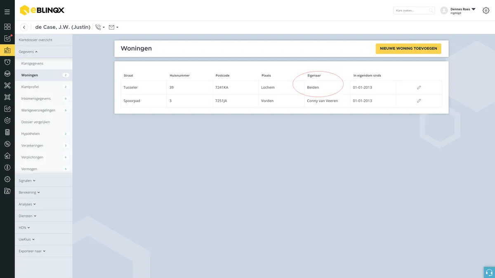
IT-23185: Verbeterde weergave woningbezit in het totaaloverzicht
We hebben een aanpassing gedaan in het totaaloverzicht van woningen. Als zowel de aanvrager als mede-aanvrager eigenaar zijn van een woning, tonen we nu de omschrijving 'Beiden' bij de eigenaar. Hierdoor is in één oogopslag duidelijk wie de eigenaar van de woning is, wat zorgt voor meer helderheid en gebruiksgemak in het overzicht.
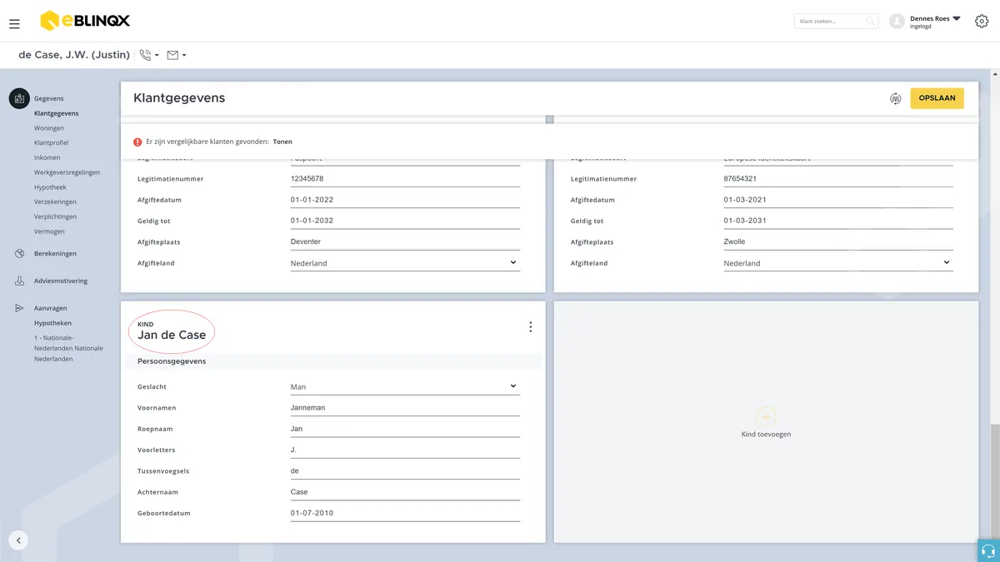
IT-23092: Weergave kindernamen in titels
We hebben een aanpassing gedaan in de manier waarop kindernamen worden weergegeven in de titels. Vanaf nu tonen we de roepnamen van de kinderen in plaats van alleen de voorletters. Deze wijziging maakt de weergave persoonlijker en duidelijker, zodat je sneller de juiste informatie kunt vinden.
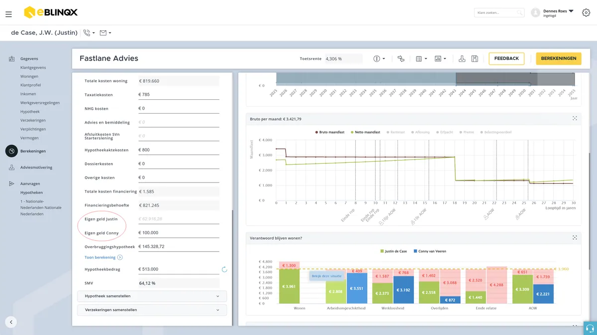
IT-23103: Inbreng eigen geld per persoon
We hebben een update doorgevoerd in de sidebar van eBlinqx Hypotheekadvies om de weergave van namen duidelijker en compacter te maken. De labels zijn aangepast van: Eigen geld (Justin de Case) en Eigen geld (Conny van Veeren) Naar: Eigen geld Justin en Eigen geld Conny. Deze wijziging zorgt voor een strakkere en overzichtelijkere presentatie in de sidebar.
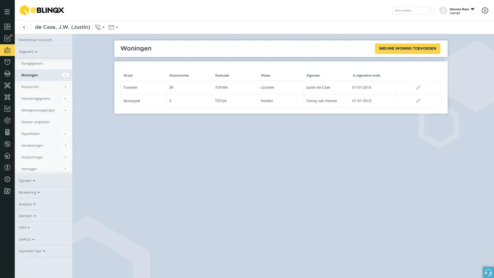
IT-23171: Verbetering in het opslaan van woningen
We hebben een verbetering doorgevoerd in het proces voor het toevoegen van woningen. Vanaf nu, wanneer je een nieuwe woning toevoegt en op de Opslaan-knop klikt, wordt het scherm automatisch gesloten en keer je direct terug naar de overzichtspagina met alle woningen. Dit zorgt voor een efficiëntere workflow en een soepelere gebruikerservaring.
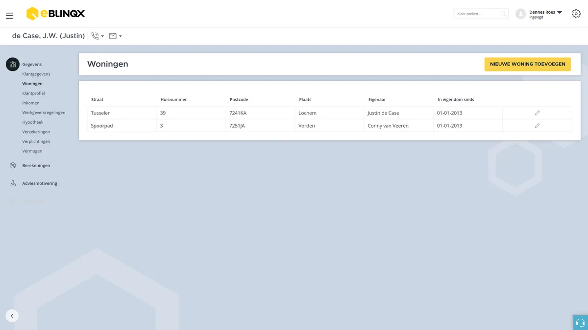
IT-22865: Meerdere woningen en specifieke hypotheektoewijzing in eBlinqx Hypotheekadvies
We werken aan de integratie van een krachtige nieuwe functionaliteit in eBlinqx Hypotheekadvies.
- Meerdere woningen beheren: Het wordt mogelijk om meerdere woningen toe te voegen en te beheren binnen eBlinqx Hypotheekadvies.
- Hypotheek koppelen aan onderpand: Gebruikers kunnen straks een hypotheek toewijzen aan een specifiek onderpand.
- Automatische berekening van overwaarde: eBlinqx Hypotheekadvies berekent de overwaarde van beide panden, wijst deze toe aan de financieringsopzet en specificeert wie welk bedrag aan overwaarde of eigen spaargeld inbrengt. Deze gegevens worden automatisch opgenomen in een draagplichtovereenkomst.
De volledige functionaliteit wordt verwacht in Q1-2025. Momenteel testen enkele pilotkantoren dit al in hun dagelijkse adviespraktijk. Wij kijken ernaar uit om deze innovatie binnenkort met iedereen te delen!
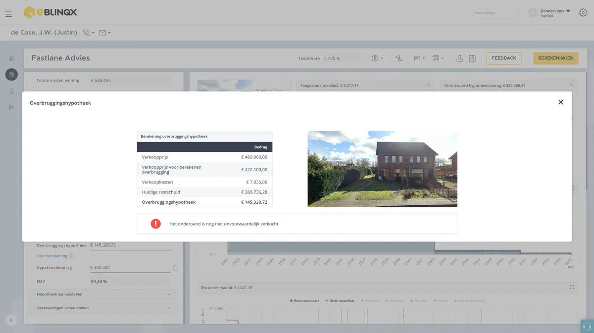
IT-22858: Berekening van de overbruggingshypotheek inzichtelijk!
eBlinqx Hypotheekadvies maakt het nu nóg eenvoudiger om transparantie te bieden aan jouw klanten. Vanaf vandaag kun je precies zien hoe de hoogte van de overbruggingshypotheek is berekend!
- Specificatie beschikbaar: In het hoofdstuk Financieringsopzet kun je bij het bedrag van de overbruggingshypotheek op 'Toon berekening' klikken. Hiermee krijg je direct inzicht in de achterliggende berekening.
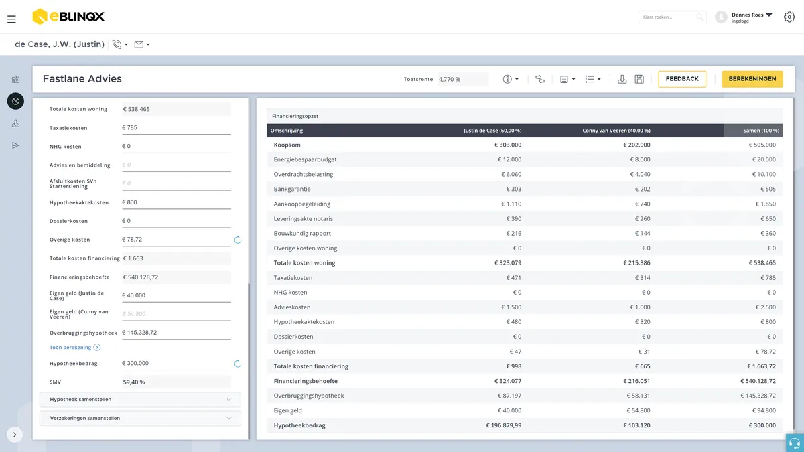
IT-23021: Tweede financieringsopzet voor eenvoudige gemeenschappen
eBlinqx Hypotheekadvies faciliteert nu een tweede financieringsopzet, speciaal gericht op situaties waarbij twee personen samen een huis gaan kopen in een eenvoudige gemeenschap.
De problematiek:
Bij eenvoudige gemeenschappen is het vaak lastig om verschillende financieringsbehoeften en bijbehorende verdelingen inzichtelijk te maken. Denk aan situaties waarbij eigenaars verschillende bedragen willen inbrengen of specifieke financieringen willen toewijzen. Deze nieuwe functionaliteit maakt het mogelijk om dit helder en overzichtelijk te presenteren.
Pilotfase:
Deze functionaliteit wordt momenteel getest door een selecte groep gebruikers in hun dagelijkse adviespraktijk. Wil je deelnemen aan deze pilot en als eerste profiteren van deze innovatieve oplossing? Laat het ons weten!
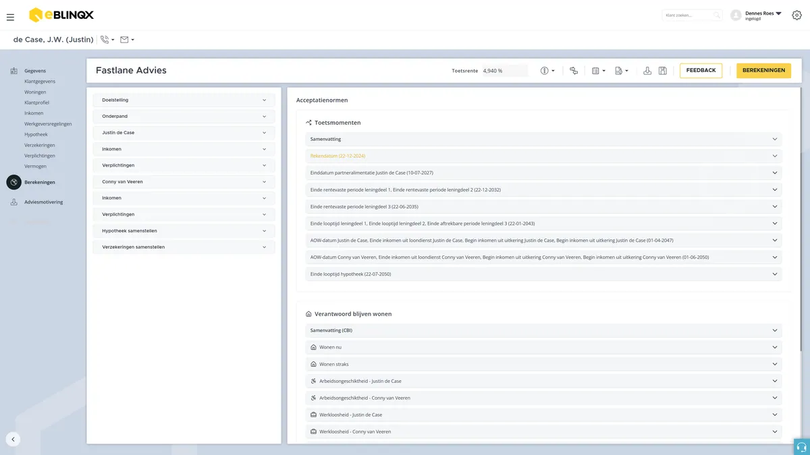
Verbeterde styling en overzichtelijkheid
- Consistente styling: De styling binnen eBlinqx Hypotheekadvies is overal rechtgetrokken, wat zorgt voor een uniformere en professionelere uitstraling.
- Meer witruimte: Er is extra witruimte toegevoegd tussen verschillende onderdelen, wat de leesbaarheid aanzienlijk verbetert en de informatie duidelijker maakt.
- Duidelijke scheiding bij acceptatienormen: Er is een visueel onderscheid toegevoegd tussen toetsmomenten en life events, wat zorgt voor meer overzicht en een betere navigatie tijdens het gebruik.
Voordelen: Deze aanpassingen verbeteren niet alleen de gebruiksvriendelijkheid en leesbaarheid, maar dragen ook bij aan een efficiëntere en prettige gebruikerservaring.
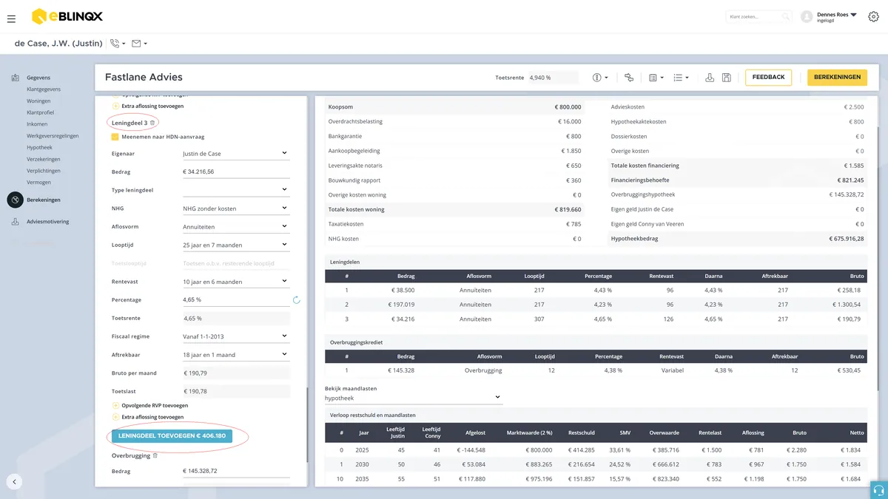
IT-23120: Verbeteringen aan leningdelen
-
Eenvoudig verwijderen van leningdelen: Gebruikers kunnen nu een leningdeel direct verwijderen met een prullenbak-icoon. Het is niet langer nodig om het bedrag op 0 te zetten.
-
Aanpassing bij hypotheekverhoging: Het automatisch toevoegen van een extra benodigd hypotheekbedrag aan bestaande leningdelen is gewijzigd. In plaats daarvan wordt hiervoor automatisch een nieuw leningdeel aangemaakt. Bestaande leningdelen kunnen nog steeds handmatig worden aangepast (verhoogd of verlaagd).
Deze wijzigingen zorgen voor meer gebruiksgemak en minimaliseren de kans op (fiscale) fouten.
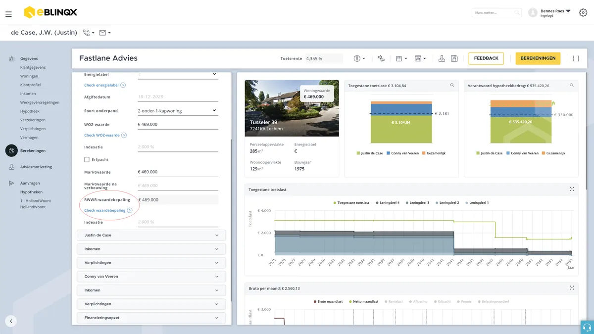
IT-23086: Link naar RWWR-waardebepaling in sidebar
In de sidebar, onder het grijze balkje ‘Onderpand’, is een link toegevoegd naar de RWWR-waardebepaling. Bij klikken op deze link wordt de adviseur direct doorgestuurd naar de juiste pagina voor de waardebepaling.
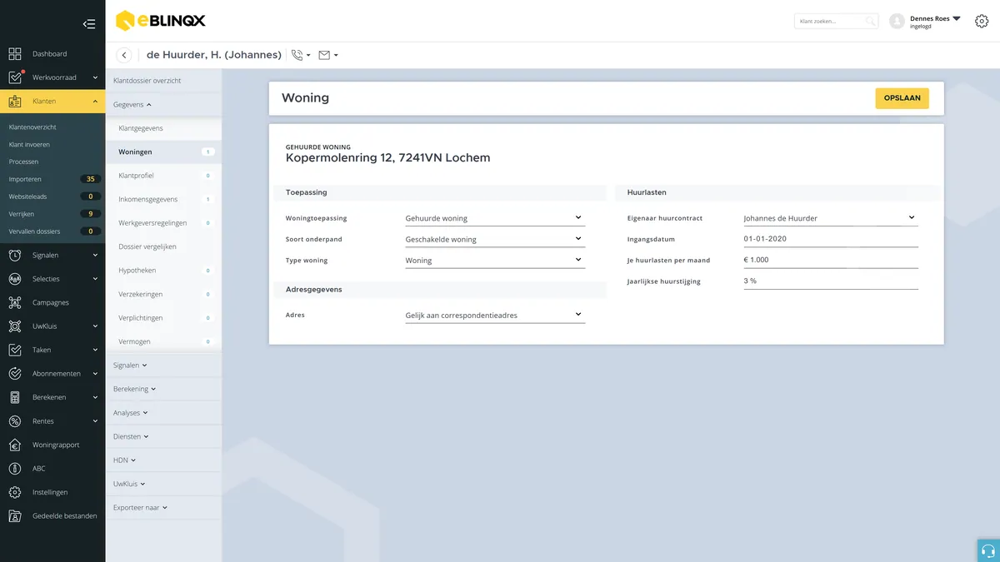
IT-22652: Weergave woninggegevens
Bij woningtoepassing ‘Gehuurde woning’ of ‘Inwonend wordt het blok ‘Woningstatus’ en de vraag ‘In eigendom sinds’ vanaf deze release verborgen. Dit zorgt voor een overzichtelijkere weergave van relevante informatie.
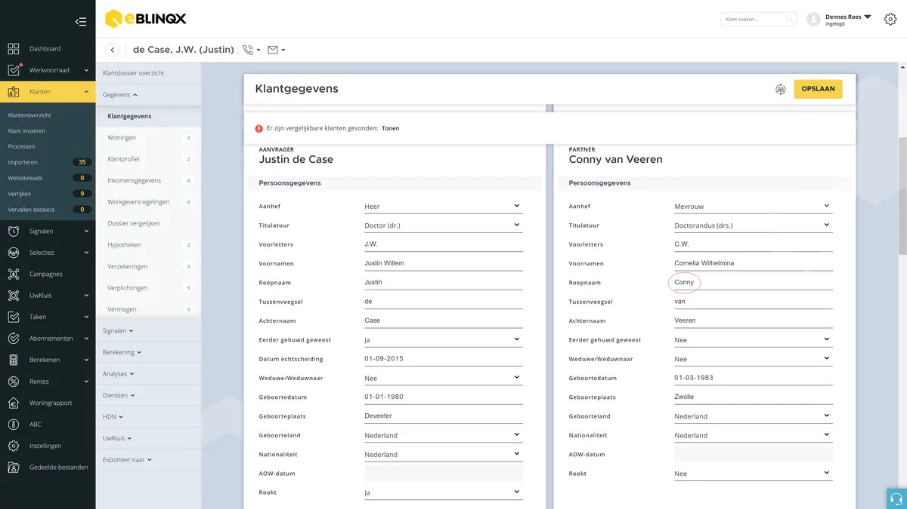
IT-23152: Roepnaam partner wordt correct overgenomen
Bij het invoeren van een klant wordt de roepnaam van de partner nu goed ingevuld. Het probleem met het niet juist overnemen is opgelost.
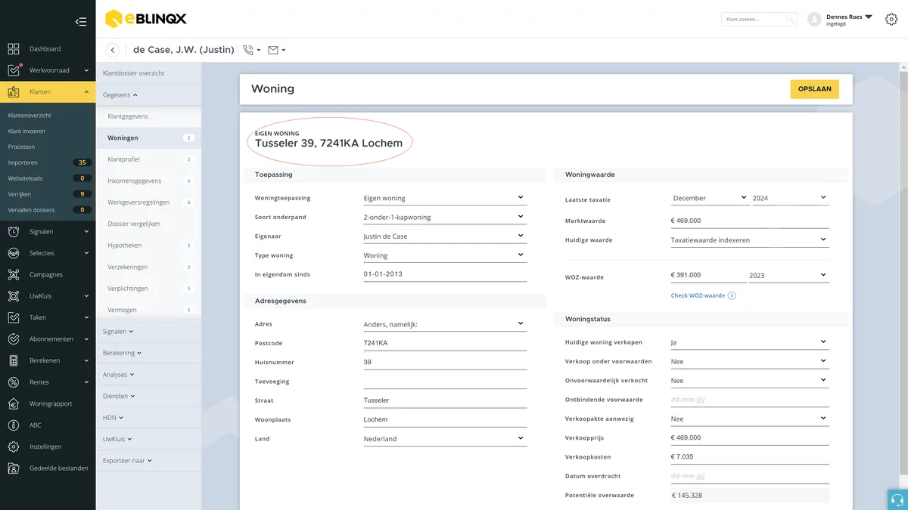
IT-20386: Postcode en woonplaats bij huidig adres
Vanaf nu worden bij het adres van de huidige woning ook de postcode en woonplaats getoond. Deze toevoeging zorgt voor meer duidelijkheid en volledigheid in de adresgegevens.
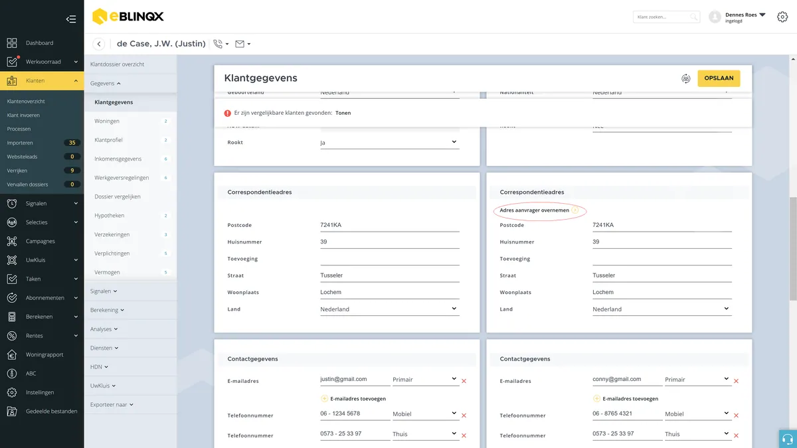
IT-22937: Correspondentieadres kopiëren
Wij hebben een nieuwe knop toegevoegd bij de klantgegevens. Hiermee kun je eenvoudig het correspondentieadres van de aanvrager kopiëren naar het correspondentieadres van de partner. Deze verbetering bespaart tijd en vermindert het risico op fouten bij het invoeren van gegevens.
IT-22315: Beheernormen 2025 en software versionering
-
Beheernormen 2025: eBlinqx Hypotheekadvies heeft de nieuwste beheernormen voor 2025 geïntegreerd. Deze normen worden nu automatisch toegepast bij de doelstelling "Ontslag uit hoofdelijke aansprakelijkheid", waardoor gebruikers altijd werken met de meest actuele regelgeving.
-
Software versionering: Dankzij de introductie van software versionering is het vanaf nu mogelijk om ook in 2025 berekeningen te maken met de normen en ingrediënten van 2024. Dit biedt meer flexibiliteit en zorgt ervoor dat lopende dossiers eenvoudig kunnen worden afgerond.
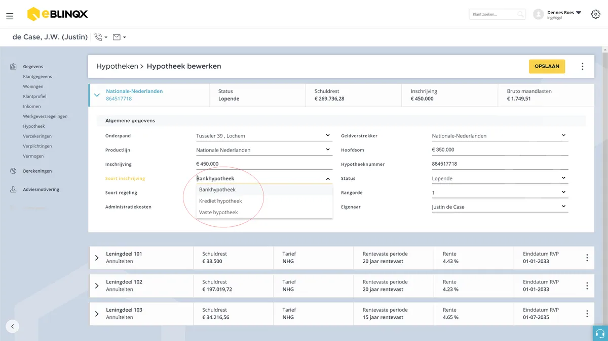
IT-19087: Soort inschrijving
Bij Huidige hypotheek is het veld 'Soort inschrijving' toegevoegd met de volgende opties:
- Bankhypotheek (standaard)
- Vaste hypotheek
- Krediet hypotheek
Dit is nu een registratieveld en zal in de toekomst gebruikt worden als selectiecriterium. Bijvoorbeeld: het filteren van bankhypotheken, wat adviseurs helpt om klanten gericht te benaderen over hypotheekverhogingen zonder dat er een nieuwe hypotheekakte moet worden opgemaakt.
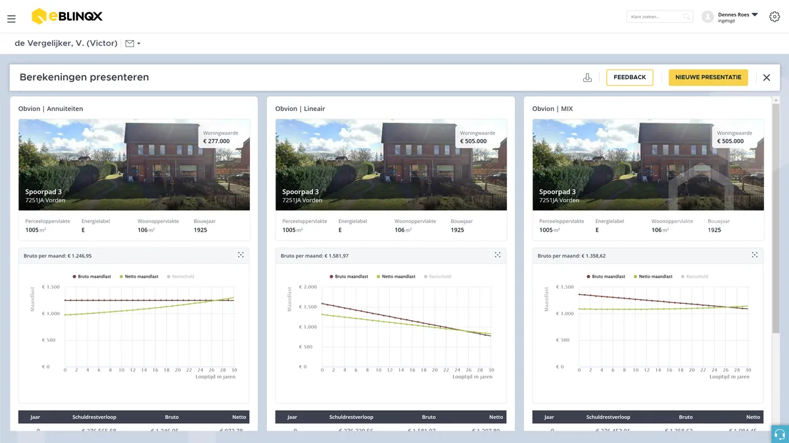
IT-22599: Berekeningen vergelijken
Na een intensieve testperiode heeft het Fastlane Team alle bevindingen van de succesvolle introductie van 'Berekeningen vergelijken' verwerkt.
De verbeteringen hebben geresulteerd in een stabiele en geoptimaliseerde versie, waarmee consumenten nu een helder en overzichtelijk inzicht krijgen in de vele opties die beschikbaar zijn. Dankzij deze update wordt het vergelijken van berekeningen niet alleen gebruiksvriendelijker, maar ook een krachtig hulpmiddel om weloverwogen keuzes te maken.
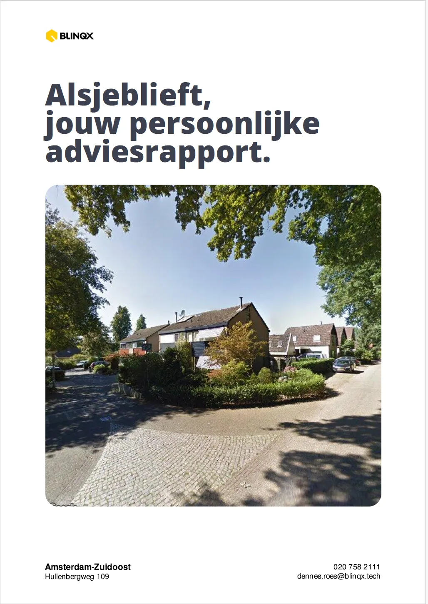
IT-13840: Verbeteringen aan het hypotheekadviesrapport
We hebben het adviesrapport herzien om zowel inhoudelijk als visueel verbeteringen door te voeren. De belangrijkste aanpassingen zijn:
- Einddatum rentevaste periode: Deze informatie wordt nu duidelijk weergegeven in het rapport.
- Lege velden verborgen: Velden zonder bedragen worden niet langer getoond, wat zorgt voor een overzichtelijker en relevanter rapport.
- Terminologie aangepast: De looptijd van bestaande leningdelen wordt nu aangeduid als resterende looptijd voor meer duidelijkheid.
- Uniforme onderstreping: Bij het onderdeel Huidige hypotheek zijn de onderstrepingen onder Pro resto hoofdsom en Bruto per maand aangepast om consistent te zijn met de overige velden.
Deze verbeteringen zorgen voor een duidelijker, professioneler en gebruiksvriendelijker hypotheekadviesrapport. 🎉
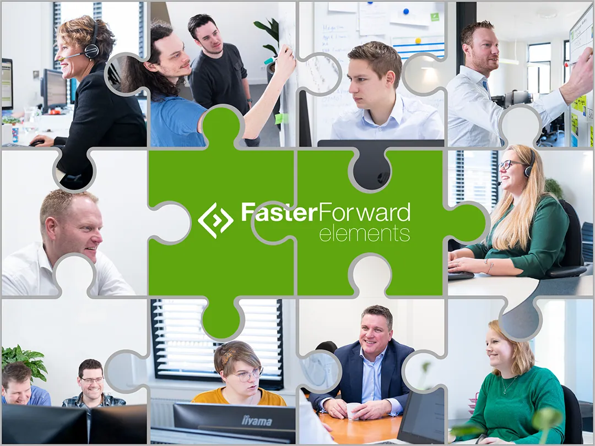
IT-21845: Importeren van inkomens als 'Ander inkomen'
Vanaf nu worden inkomens die geïmporteerd worden vanuit Adviesbox en Elements automatisch toegevoegd onder het onderdeel Inkomen -> Ander inkomen. Details van het nieuw toegevoegde inkomen:
- Soort inkomen: Anders
- Omschrijving: Bron (bijv. Nationale Hypotheekbond, Adviesbox, etc.)
- Startdatum: Eerste dag van de huidige maand
- Einddatum: AOW-datum van de klant
- Jaarlijks bruto inkomen: Het rekeninkomen of een ander geïmporteerd (reken)inkomen
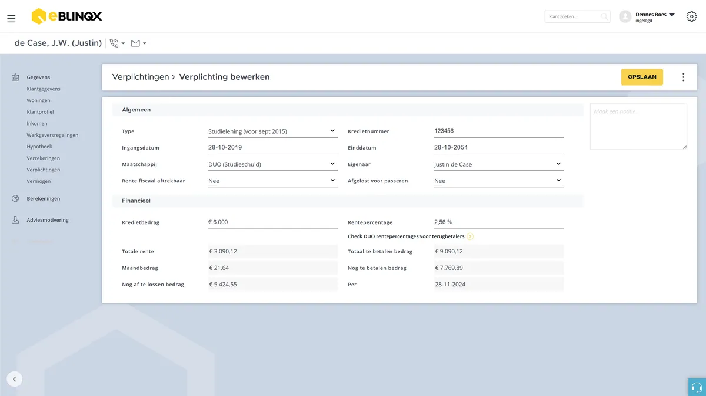
IT-17140: Uitbreiding studieschuldvelden en automatische maandlastberekening
- Automatische maandlastberekening: De maandlast voor een studielening wordt nu automatisch berekend. Dit biedt meer gemak en nauwkeurigheid bij het verwerken van studieleningen.
- Techniek van aflopend krediet: Voor de berekening wordt de techniek van het aflopend krediet binnen eBlinqx Hypotheekadvies toegepast, waardoor de functionaliteit naadloos aansluit op bestaande processen.
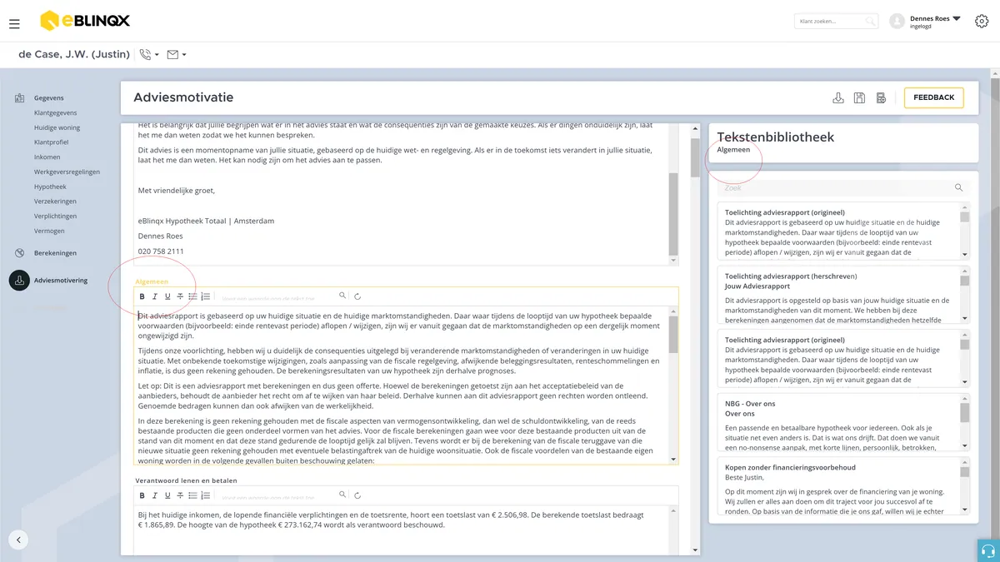
IT-22636: Adviesteksten / Motivatievak 'Algemeen'
Voorheen waren alle teksten die onder het hoofdstuk 'Algemeen' stonden overal beschikbaar bij het motiveren van onderdelen. Echter, nadat we een specifiek hoofdstuk 'Algemeen' aan het adviesrapport hebben toegevoegd, ontstond er onbedoeld verwarring vanwege de naamgeving. Om dit op te lossen, hebben we ervoor gekozen om de teksten nu specifiek bij het adviesmotivatieblok 'Algemeen' te positioneren. Ze zijn dus nog steeds beschikbaar, maar alleen daar waar relevant.
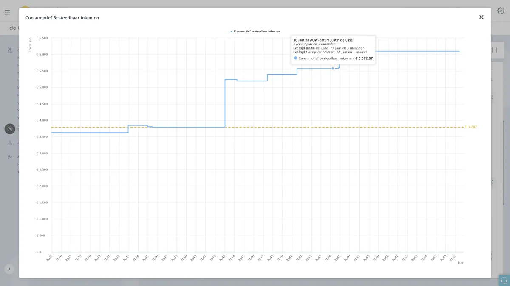
IT-22862: Consumptief Besteedbaar Inkomen
Bij de grafiek van het CBI hebben we nu een stippellijn toegevoegd die het huidige consumptief besteedbaar inkomen laat zien. Ook hebben we de optie toegevoegd om de grafiek in volledig scherm te bekijken.
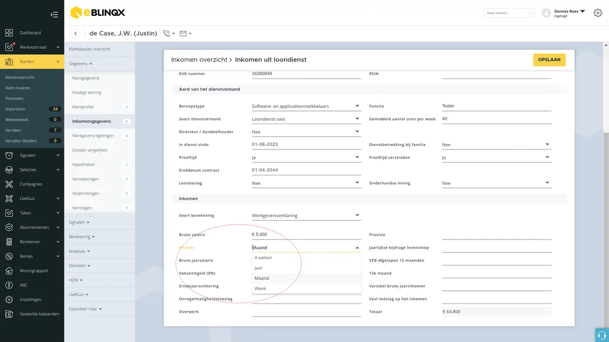
IT-18674: Inkomensperiode
In de sectie 'Inkomensgegevens' kun je nu kiezen of je je inkomen per vier weken of per week wilt opgeven.
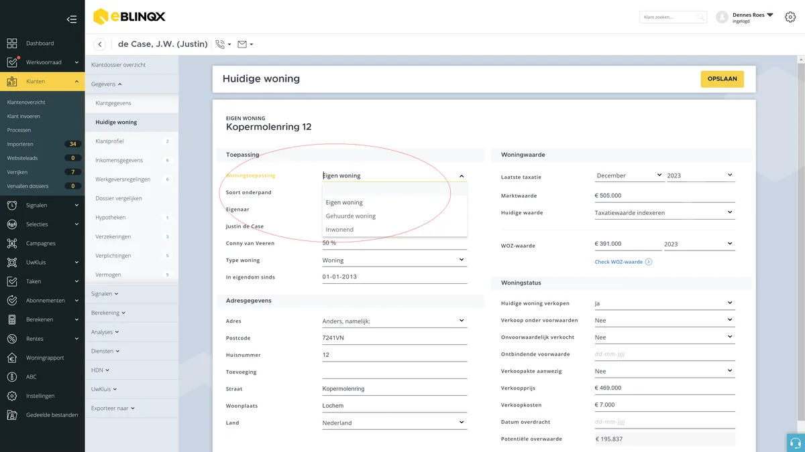
IT-22794: Woningtoepasssing
In de sectie 'Huidige woning' kun je bij 'Woningtoepassing' nu kiezen uit drie opties:
- Eigen woning
- Gehuurde woning
- Inwonend
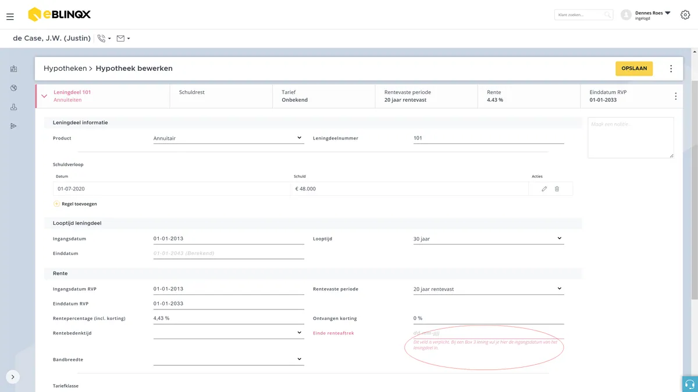
IT-22852: Einddatum renteaftrek
Voor een correcte berekening van de netto maandlasten is het essentieel om de einddatum van de renteaftrek nauwkeurig in te vullen. Daarom hebben we dit veld enige tijd geleden verplicht gesteld. Ook voor een Box 3 leningdeel moet deze datum worden ingevuld. In het geval van een Box 3 leningdeel dient de adviseur de einddatum van de renteaftrek gelijk te stellen aan de ingangsdatum van dit leningdeel.
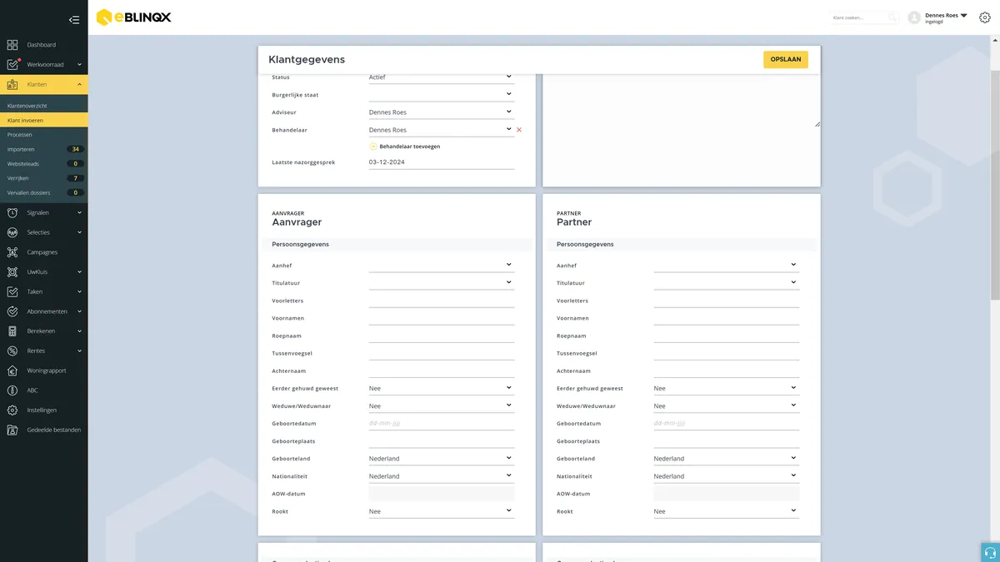
IT-22204: Prefillen nieuw dossier
We zijn enthousiast om een nieuwe stap te zetten in het ondersteunen van onze hypotheekadviseurs! Met de implementatie van de prefill-functie voor het aanmaken van een nieuw dossier in de eBlinqx Hypotheekadvies database, maken we het proces niet alleen sneller, maar ook efficiënter. Wat houdt dit in?
Bij het aanmaken van een nieuw dossier zullen de volgende velden automatisch worden ingevuld:
Dossiergegevens
- Status: Actief, zodat je meteen aan de slag kunt.
- Behandelaar: Dit wordt gelijkgesteld aan de adviseur.
- Laatste nazorggesprek**: Dit wordt automatisch ingevuld met de datum van dossieraanmaak
Aanvrager & Partner
- Eerder gehuwd geweest: Nee
- Weduwe/Weduwnaar: Nee
- Geboorteland: Nederland
- Nationaliteit: Nederland
- Rookt: Nee
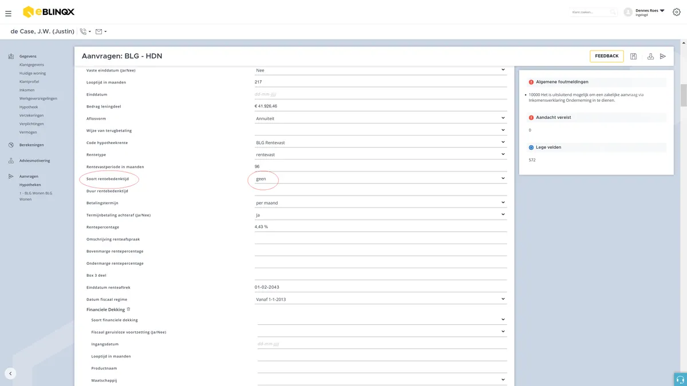
IT-21085: Soort rentebedenktijd BLG
BLG Wonen biedt geen rentebedenktijd aan. Daarom prefillen wij de vraag 'Soort rentebedenktijd' in het HDN-aanvraagformulier met het antwoord 'Geen'.
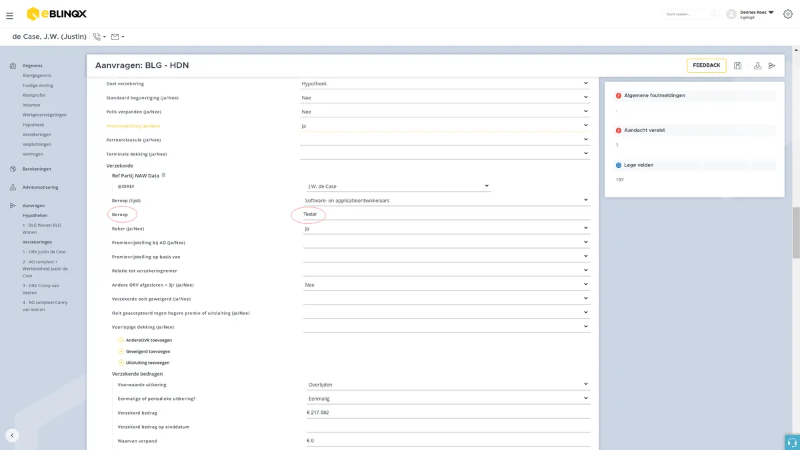
IT-19685: Prefillen beroep
Wij gaan, bij de aanvraag voor een overlijdensrisicoverzekering, het beroep van de verzekerde prefillen in het HDN-aanvraagformulier. Wij mappen de functie uit het inkomstenformulier bij loondienstverband en 'Ondernemer' bij iemand met een eigen onderneming.
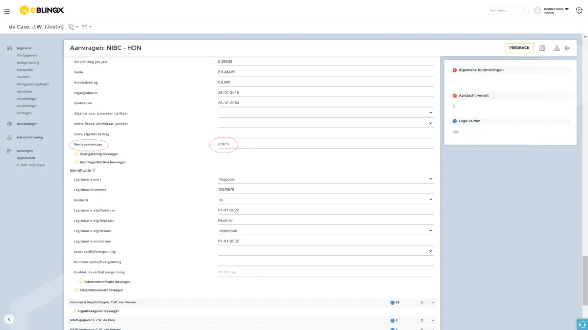
IT-21063: Rente studieschuld Wij gaan het rentepercentage van de studielening prefillen naar het HDN-aanvraagformulier.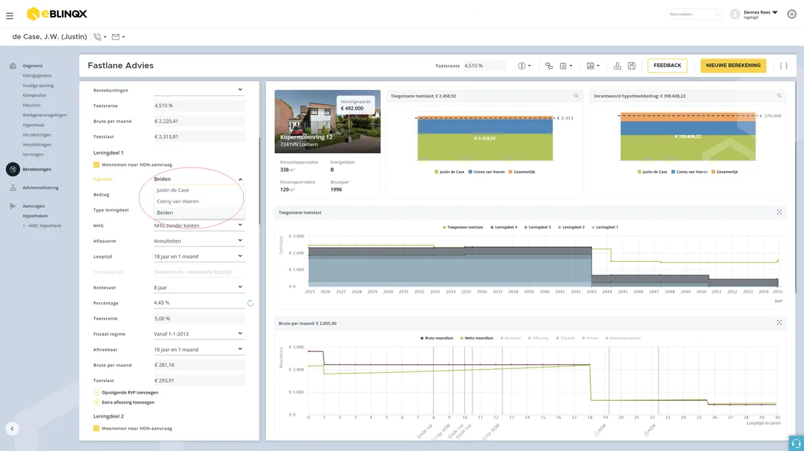
IT-21642: Eigenaar van het leningdeel
Wij gaan het veld ‘Eigenaar’ toevoegen aan een leningdeel indien er zowel een aanvrager als een mede-aanvrager in het dossier/hypotheekconstructie aanwezig is en de burgerlijke staat van de klant (zoals opgegeven in PortefeuilleSignalen) één van onderstaande is:
-
Samenwonend (conract)
-
Samenwonend
-
Gehuwd (huw. voorw.)
-
Partnerreg. (reg.voorw.)
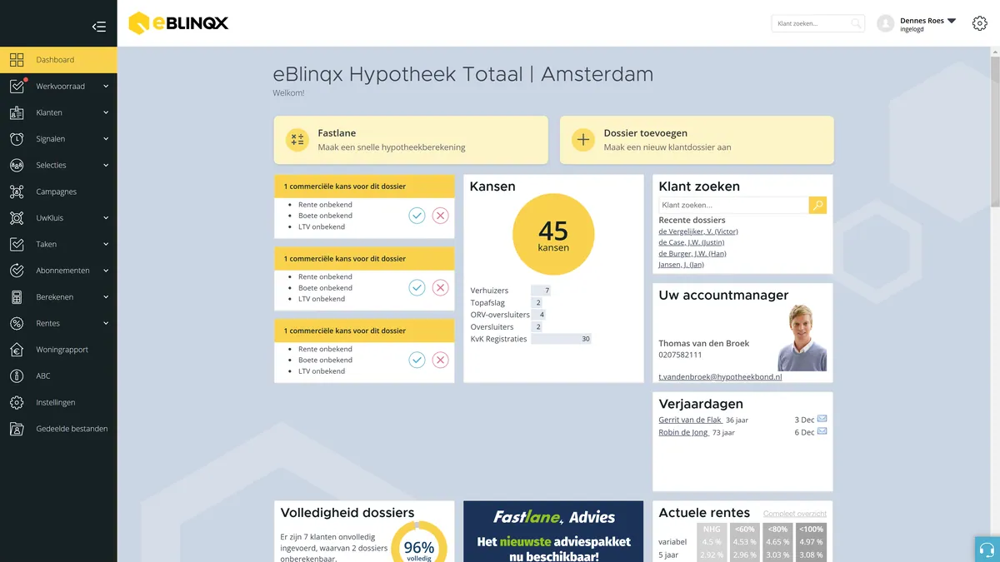
IT-22786: Buttons landingspage
We hebben twee extra knoppen toegevoegd aan de landingspagina. Hierdoor kan de adviseur sneller een nieuwe klant toevoegen of een hypotheekberekening maken in Fastlane Orientatie.
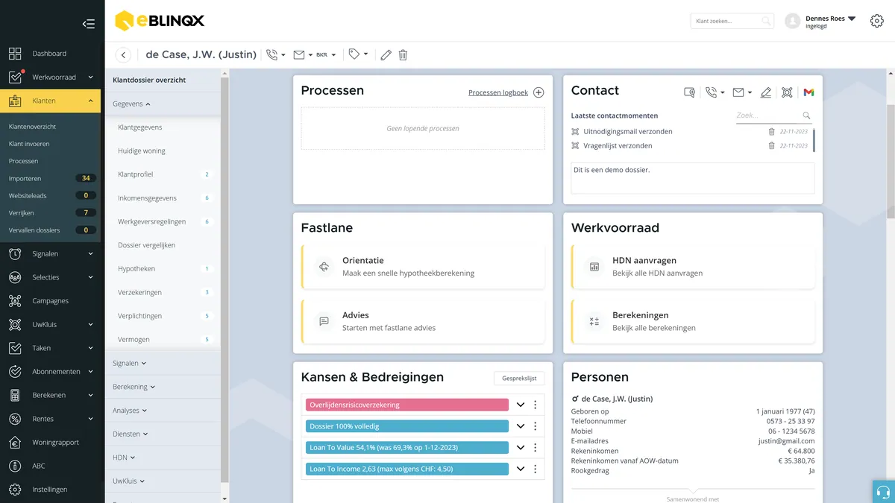
IT-22786: Buttons klantenpagina
We hebben vier extra knoppen toegevoegd aan de klantenpagina. Hierdoor kan de adviseur sneller naar eBlinqx Hypotheekadvies, de berekeningen en de HDN-aanvragen.
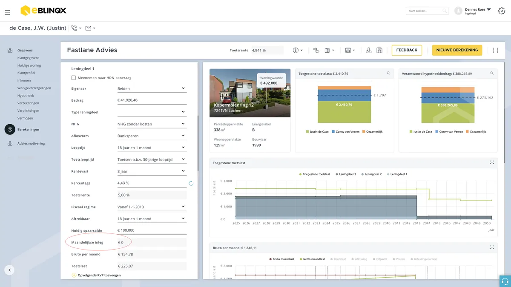
IT-14602: Inleg (bank)spaar- of levenhypotheek
De maandelijkse inleg bij Spaarhypotheek/Banksparen en Levenhypotheek mag vanaf nu ook € 0,00 zijn.
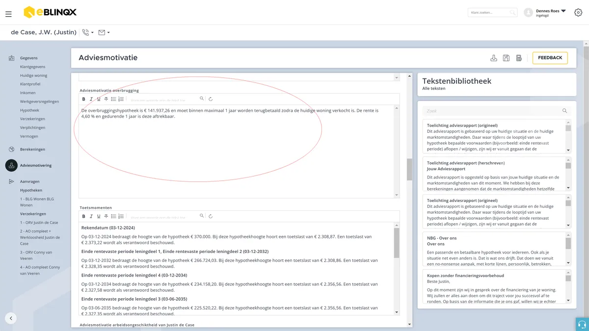
IT-22365: Overbruggingshypotheek
De pagina 'Overbruggingshypotheek' werd niet weergegeven in het adviesrapport als de adviseur geen bestaande hypotheek in de database had ingevoerd. Dit probleem is nu verholpen. Het kan namelijk voorkomen dat een klant wel een eigen woning heeft, maar daar geen hypotheek (meer) op heeft.